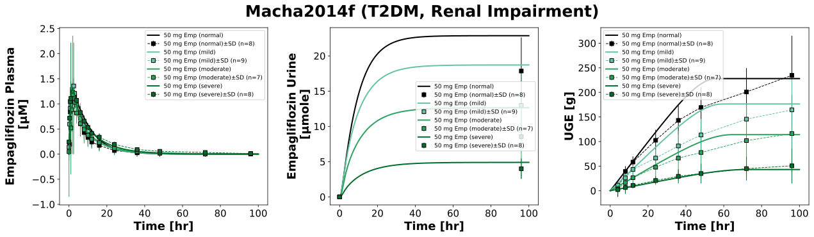

|  |
../../../../experiments/studies/macha2014f.py
from typing import Dict
from sbmlsim.data import DataSet, load_pkdb_dataframe
from sbmlsim.fit import FitMapping, FitData
from sbmlutils.console import console
from sbmlsim.plot import Axis, Figure
from sbmlsim.simulation import Timecourse, TimecourseSim
from pkdb_models.models.empagliflozin.experiments.base_experiment import EmpagliflozinSimulationExperiment
from pkdb_models.models.empagliflozin.experiments.metadata import (
Tissue, Route, Dosing, ApplicationForm, Health, Coadministration, \
Fasting, EmpagliflozinMappingMetaData
)
from pkdb_models.models.empagliflozin.helpers import run_experiments
class Macha2014f(EmpagliflozinSimulationExperiment):
"""Simulation experiment of Macha2014f."""
fpg = 10 # [mM] healthy subjects besides renal impairment
bodyweight = {
"normal": 56,
"mild": 70.2,
"moderate": 78.6,
"severe": 75.1,
# "esrd": 77.25,
}
# [kg]
renal_functions = {
"normal": 100/100,
"mild": 0.5 * (60 + 89)/100,
"moderate": 0.5 * (30 + 59)/100,
"severe": 15/100,
}
colors = {
"normal": EmpagliflozinSimulationExperiment.renal_colors["Normal renal function"],
"mild": EmpagliflozinSimulationExperiment.renal_colors["Mild renal impairment"],
"moderate": EmpagliflozinSimulationExperiment.renal_colors["Moderate renal impairment"],
"severe": EmpagliflozinSimulationExperiment.renal_colors["Severe renal impairment"],
}
groups = list(renal_functions.keys())
info = {
"[Cve_emp]": "empagliflozin",
"Aurine_emp": "empagliflozin_urine",
"KI__UGE": "uge",
}
def datasets(self) -> Dict[str, DataSet]:
dsets = {}
for fig_id in ["Fig1", "Fig3", "Tab2A"]:
df = load_pkdb_dataframe(f"{self.sid}_{fig_id}", data_path=self.data_path)
for label, df_label in df.groupby("label"):
dset = DataSet.from_df(df_label, self.ureg)
# unit conversion
if label.startswith("empagliflozin_urine"):
dset.unit_conversion("mean", 1 / self.Mr.emp)
dsets[f"{label}"] = dset
# console.print(dsets)
# console.print(dsets.keys())
return dsets
def simulations(self) -> Dict[str, TimecourseSim]:
Q_ = self.Q_
tcsims = {}
for group in self.groups:
tcsims[group] = TimecourseSim(
[Timecourse(
start=0,
end=100 * 60, # [min]
steps=500,
changes={
**self.default_changes(),
"BW": Q_(self.bodyweight[group], "kg"),
"[KI__fpg]": Q_(self.fpg, "mM"),
"KI__f_renal_function": Q_(self.renal_functions[group], "dimensionless"), # [0, 1] <=> [0, 100] gfr
"PODOSE_emp": Q_(50, "mg"),
},
)]
)
return tcsims
def fit_mappings(self) -> Dict[str, FitMapping]:
mappings = {}
for kp, sid in enumerate(self.info):
name = self.info[sid]
for group in self.groups:
mappings[f"fm_{name}_{group}"] = FitMapping(
self,
reference=FitData(
self,
dataset=f"{name}_{group}",
xid="time",
yid="mean",
yid_sd="mean_sd",
count="count",
),
observable=FitData(
self, task=f"task_{group}", xid="time", yid=sid,
),
metadata=EmpagliflozinMappingMetaData(
tissue=Tissue.PLASMA if name == "empagliflozin" else Tissue.URINE,
route=Route.PO,
application_form=ApplicationForm.TABLET,
dosing=Dosing.SINGLE,
health=Health.T2DM if group == "normal" else Health.T2DM_RENAL_IMPAIRMENT,
fasting=Fasting.NR,
coadministration=Coadministration.NONE,
),
)
return mappings
def figures(self) -> Dict[str, Figure]:
fig = Figure(
experiment=self,
sid="Fig1_3_Tab2A",
num_rows=1,
num_cols=3,
name=f"{self.__class__.__name__} (T2DM, Renal Impairment)",
)
Figure.legend_fontsize = 10
plots = fig.create_plots(xaxis=Axis(self.label_time, unit=self.unit_time), legend=True)
plots[0].set_yaxis(self.label_emp_plasma, unit=self.unit_emp)
plots[1].set_yaxis(self.label_emp_urine, unit=self.unit_emp_urine)
plots[2].set_yaxis(self.label_uge, unit=self.unit_uge)
for kp, sid in enumerate(self.info):
name = self.info[sid]
for group in self.groups:
# simulation
plots[kp].add_data(
task=f"task_{group}",
xid="time",
yid=sid,
label=f"50 mg Emp ({group})",
color=self.colors[group],
)
# data
plots[kp].add_data(
dataset=f"{name}_{group}",
xid="time",
yid="mean",
yid_sd="mean_sd",
count="count",
label=f"50 mg Emp ({group})",
color=self.colors[group],
linestyle="" if "urine" in name else "--"
)
return {
fig.sid: fig,
}
if __name__ == "__main__":
run_experiments(Macha2014f, output_dir=Macha2014f.__name__)
{kind=link}